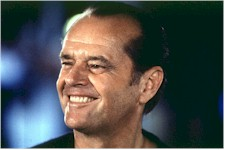
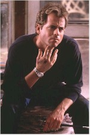
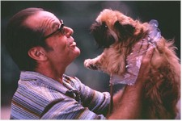
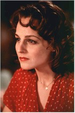

Contents | Features | Reviews | News | Archives | Store |
 |
|
| Movie Credits | Buy It! |
As Good As It Gets
Review by Eddie Cockrell
Posted 25 December 1997
| Directed by James L. Brooks Starring
Jack Nicholson, Helen Hunt, Screenplay by Mark Andrus and James L. Brooks |
Featuring the most mischievous and appealingly sassy performance by Jack Nicholson since at least Batman nearly ten years ago (1995's underrated The Crossing Guard shows him at his recent dramatic best), as well as a triumphant return to offbeat comic form by producer-director-writer James L. Brooks, the aptly titled As Good as It Gets is a triumph of collaborative, intuitive filmmaking and one funny picture in the bargain.
Tart-tongued Manhattan-based romance novelist Melvin Udall (Nicholson: that's funny right there) is an obsessive-compulsive who makes life miserable for everyone in his West Village apartment building and neighborhood. Before the title credit even appears he's casually tossed a dog down a garbage chute, and when vexed he tends to say things like "people who speak in metaphors should shampoo my crotch." Melvin has his rituals, throwing each lock on his door and flipping his light switches a certain number of times, avoiding all cracks on all flooring and street surfaces, unwrapping a new bar of soap each time he washes his hands, that sort of thing. But his most coveted regimen involves a daily meal at Café 24, where the only waitress who will tolerate him (barely) is Carol Connelly (Helen Hunt), who has her own problems raising a chronically asthmatic son under the watchful eye of her pragmatic mother Beverly (Shirley Knight).
The other chief foil for Melvin's vituperative barbs is Simon (Greg Kinnear), the gay artist who lives just across the hall. Riding a wave of dizzying success, Simon is surrounded by supporters include his art dealer Frank Sachs (Cuba Gooding, Jr.). As the relationships among these unlikely friends develop in a complex dance of missed opportunities and unsteady alliances and culminating in a harrowingly funny trip outside the comfortable confines of New York City to the uncharted emotional waters of Baltimore (although it looks like nothing was actually shot there), each reveals strengths and weaknesses that make them at once endearingly vulnerable and comically greedy.
While Nicholson will get the lion's share of the press for his concentrated blast of exaggerated obnoxiousness (or maybe that's just how New Yorkers are), the movie's quicksilver heart belongs to Hunt, who may remind savvy movie lovers with long memories of a contemporary Carole Lombard (quick, run out and rent Twentieth Century [1934], My Man Godfrey [1936], and especially the 1937 screwball masterpiece Nothing Sacred).
After a brief string of less than successful comedies (that so what remake of Sabrina, A Smile Like Yours, Dear God), Greg Kinnear brings a concentration and light touch missing from his previous work to the role of Simon. One suspects more to the Cuba Gooding, Jr. role than what's in the final cut, but the surviving performance leaves a good impression. Stealing everything that isn't nailed down from the principles is Jill, a Brussels Griffon (that's dog to the rest of us) from Texas that Brooks called "the fourth lead in the picture." Timer and Billy are credited as well, apparently for serving as emergency backup stunt dogs of sorts.
The director, who's won three Oscars and 13 Emmy Awards to date, has a knack for making funny movies out of red-flag subjects: cancer in the Oscar-winning Terms of Endearment (1983), blind ambition in Broadcast News (1987), the self-absorption of contemporary creative types in I'll Do Anything (1994) and just about everything else in the anarchic, irreverent humor of "The Simpsons" (which he produces) and last year's celebrated Jerry McGuire (which he produced, and is perhaps the closest in tone – call it the buckshot theory of comedy – to As Good as It Gets).
The original script by Mark Andrus (who wrote the unique but poorly balanced 1991 movie Late for Dinner) was extensively reworked by Brooks, who decided to make Nicholson's illness clinical and eventually balanced the insults with emotionally honest moments like Melvin's confessional to Carol in a Baltimore restaurant: "Your skin, your long neck, the back, the line of you. You're why cavemen chiseled on walls." And then the clincher: "You make me want to be a better man." This from the guy who wants somebody to shampoo his crotch?
"The tone of this picture was always a bafflement for me," Brooks has said, "I started to try and write some of what I wanted the movie to be about. It ended up being a year of writing for me. The tone was completely up for grabs; I'd never seen anything like it." Even the name change during production points to initial confusion over the direction of the film, as the original title Old Friends (an odd choice, given the finished film) gave way to the current moniker.
As has become de rigeur for a Brooks project, in-jokes abound. Writer-directors Lawrence Kasdan (Body Heat, Grand Canyon) and Harold Ramis (Groundhog Day, Multiplicity) have amusing cameos as doctors, and that's Welcome to the Dollhouse director Todd Solondz as Hunt's mute busmate in a brief shot that may at one time have been part of a larger scene.
On that subject, Brooks had always been known for having a very clear idea of what he wanted to accomplish on a movie set, but in fact re-shot and re-edited so much of As Good as It Gets that it took a half-dozen test screenings – maybe four more than the rough industry average – to get the film exactly where he had finally decided it should go. "The picture's about the things we do to make ourselves safe in our prisons," he told the New York Times recently. "I feel that if we're not striving for a state, a life that's better, we're nuts. I was nuts. I've had a change of heart. It's a new take on life for me, and God knows I needed one. I guess it says, sanity is optimism."
If there are drawbacks to film's freewheeling approach to life and love, one cavil might be the budding romance between Nicholson (born 1937) and Hunt (born 1963); do the math. Another might be the length, despite Brooks' efforts at distillation; at two hours and eighteen minutes even the freshest comedy tends to overstay its welcome. Yet for all its genial meandering it is hard indeed to dislike a movie that has the following line discreetly tucked at the very end of the credits: "The actors used in this film were in no way mistreated."
Already surfacing on a number of ten best lists for the movie-going year, As Good as It Gets succeeds on sheer chutzpah alone ("a comedy from the heart that goes for the throat," proclaims the pithy tag line), but stays in the memory for its depiction of three-dimensional characters in search of some kind of genuine human interaction in a world that moves too fast and offers too few breaks. Just the kind of bittersweet movie-going experience that audiences adore this time of year (if you act the way you're supposed to you'll love these folks, you'll hate these folks, then you'll love them all over again), As Good as It Gets is, to risk the obvious, contemporary American comedy as good as it gets.
Contents | Features | Reviews | News | Archives | Store
Copyright © 1999 by Nitrate Productions, Inc. All Rights Reserved.